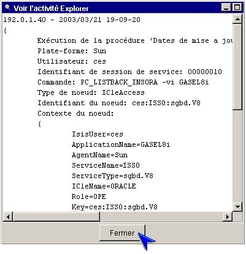

I-SIS Explorer

Guide d'utilisation
|
|
I-SIS Explorer |
|
|
Guide d'utilisation |
||
L'exécution d'une méthode d'exploitation peut correspondre à l'affichage du contenu d'un fichier se trouvant sur la plate-forme du I-SIS Portail ou sur la plate-forme d'un I-SIS Agent.
Une sous-fenêtre est affichée dans la zone droite de la fenêtre principale de I-SIS Explorer, cette sous-fenêtre ne présentant qu'une zone affichant le contenu du fichier et permettant, via des barres de défilement, un déplacement dans le contenu du fichier.
Cliquez sur le bouton "Fermer" pour fermer la sous-fenêtre.

| i |
Information : Tout ou une partie des informations contenues dans la zone d'affichage du contenu du fichier peuvent être copiées, via le menu "Edition". |
Copyright © 2003 BV Associates. Tous droits réservés.